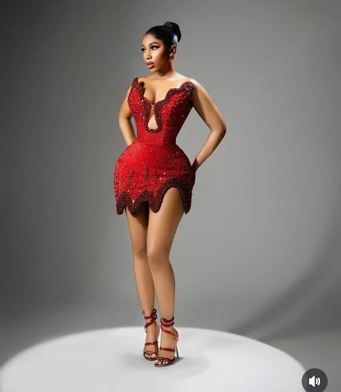
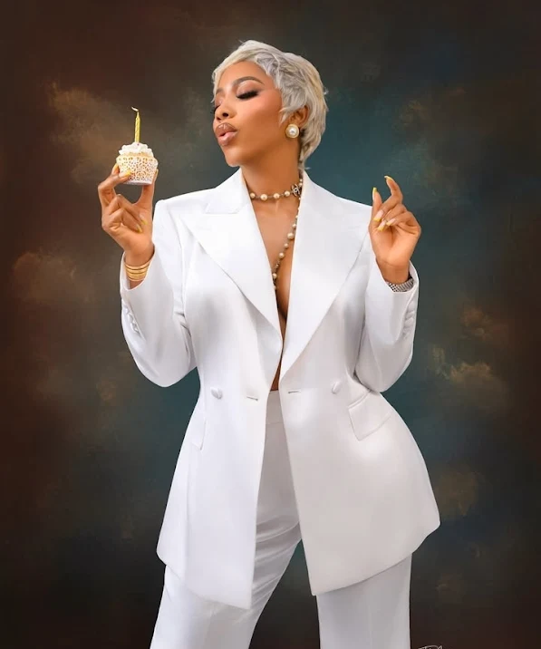
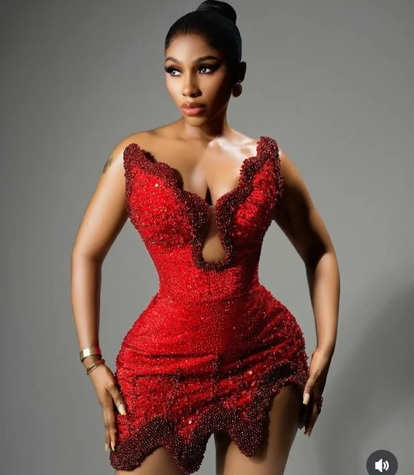

Mercy Eke Shuts Down Instagram With Jaw-Dropping Birthday Photos

Mercy Eke, Big Brother Naija’s most celebrated queen, has once again proven why she’s the reigning star of reality TV. The BBNaija winner left her fans breathless as she flooded Instagram with stunning shots from her birthday celebration. From her backside to her frontside — and even her “cornerside” as fans cheekily called it — Mercy gave everyone more than enough to talk about!
Since she stormed out of the Big Brother house, Mercy has remained the blueprint. While new stars continue to emerge each year, none have held the spotlight with the same power, class, and sheer magnetism as she has. For her loyal fans, Mercy isn’t just another celebrity — she’s a movement, a style icon, and a standard setter.



Social media has been buzzing with praise, fire emojis, and endless love notes from her fanbase — the “Mercenaries” — who continue to stand solidly behind their queen. And true to form, Mercy hasn’t disappointed: she’s embraced the spotlight with elegance, glam, and a whole lot of sass.
Happy Birthday to the queen of highlights herself — Mercy Eke!